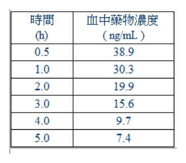

108 年第 2 次藥師藥劑學與生物藥劑學試題與答案
這一頁是民國 108 年第 2 次藥師藥劑學與生物藥劑學的整份歷屆試題，共 80 題，題目與標準答案出自考選部「國家考試試題及測驗式試題答案」開放資料。以下逐題列出題幹、選項與答案；要計時作答或記錄成績，請用線上練習。
考選部原始場次代碼：108100
線上作答這一科 →
全部 80 題
第 1 題
一藥物以零階次動力學降解，其反應速率為0.025 mg/mL/day，若起始藥物濃度為2% w/v，經過兩週後，藥物 濃度剩多少（mg/mL）？
- （A）1.65
- （B）1.95
- （C）19.65
- （D）19.95
答案：（C）
第 2 題
25℃水的密度最接近下列何者？
- （A）0.04 lb/in3
- （B）0.9 oz/in3
- （C）1 g/L
- （D）500 kg/m3
答案：（A）
第 3 題
欲製備0.25% w/v neomycin sulfate溶液120 mL，需使用此藥的原液（1 g/10 mL）多少mL？
- （A）1.5
- （B）3.0
- （C）4.5
- （D）6.0
答案：（B）
第 4 題
有關固體在液體中溶解度的敘述，下列何者正確？
- （A）若物質的溶解過程為放熱反應時，提高溫度可以提高該物質的溶解度
- （B）將氯化鈉放在比較高溫的環境可以達到提高氯化鈉溶解度的目的
- （C）將氫氧化鈣放在比較低溫的環境可以達到提高氫氧化鈣溶解度的目的
- （D）在溶解過程中加快攪拌的速度可以提高該物質的溶解度
本題送分，無標準答案
第 5 題
「酏劑」為被廣用於口服之液體製劑，其特性何者除外？
- （A）矯味佳而口感好
- （B）與其他大部分液劑比較，其安定性尚佳
- （C）含有酒精
- （D）通常不含糖，很適合糖尿病患服用
答案：（D）
第 6 題
下列何者可與水任意混合（miscible）？
- （A）乙醚
- （B）丙酮
- （C）礦油
- （D）液體酚
答案：（B）
第 7 題
有關纖維素之衍生物的水溶解度敘述，下列何者正確？
- （A）甲基纖維素溶於熱水
- （B）甲基纖維素溶於冷水
- （C）乙基纖維素溶於冷水
- （D）乙基纖維素溶於熱水
答案：（B）
第 8 題
下列分散系統何者在肉眼下較有可能呈現澄清狀？
- （A）微膠粒水溶液
- （B）O/W乳劑
- （C）W/O乳劑
- （D）去凝絮化懸液
答案：（A）
第 9 題
當假塑性流體（pseudoplastic liquid）以受力之切變速率（Y軸）對切應力（X軸）作圖，若切應力大小為甲＞ 乙＞丙，則同一稠度曲線之斜率的大小關係為何？
- （A）甲＞乙＞丙
- （B）乙＞丙＞甲
- （C）丙＞甲＞乙
- （D）丙＞乙＞甲
答案：（A）
第 10 題
皂土溶液其扁平質粒（platelet）利用下列何項效應可觀察到其布朗運動？
- （A）丁道爾（Tyndall）
- （B）擴散
- （C）滲透
- （D）電泳
答案：（A）
第 11 題
使用同一套毛細管黏度計測流體的黏稠度，除了需檢測流體的流動時間，尚需下列何項數據？
- （A）毛細管半徑
- （B）滲透壓
- （C）兩側液面落差
- （D）液體密度
答案：（D）
第 12 題
一般有關乳劑顆粒大小越小時，黏度會如何？
- （A）越小
- （B）不變
- （C）越大
- （D）無法判斷
答案：（C）
第 13 題
下列何種方法不適合測量藥物粒子大小？
- （A）Fisher sub-sieve sizer
- （B）optical microscopy
- （C）sedimentation
- （D）sieve analysis
答案：（A）
第 14 題
粉末之真密度（true density）為3 mg/mL，擬調配一6 mg藥物於10 mL懸浮液時，bulk porosity為下列何者？
- （A）30%
- （B）60%
- （C）80%
- （D）100%
答案：（C）
第 15 題
破傷風類毒素製劑中添加氫氧化鋁的作用為何？
- （A）吸著劑
- （B）抑菌劑
- （C）界面活性劑
- （D）等滲調節劑
答案：（A）
第 16 題
界面活性劑濃度大於臨界微膠體濃度（CMC）時會影響溶液之特性，下列何者正確？
- （A）黏度變小
- （B）混濁度變小
- （C）擴散係數變小
- （D）滲透壓變小
答案：（C）
第 17 題
依據美國藥典通則中「非無菌品之調劑」規定，經藥局藥師以市售不含水藥品（尚有2年使用期）調劑製得的 藥物栓劑，其使用期限稱為？此製品可使用多久？
- （A）beyond-use date，3個月
- （B）beyond-use date，6個月
- （C）expiration date，3個月
- （D）expiration date，6個月
答案：（B）
第 18 題
根據中華藥典第八版，有關眼用軟膏金屬粒子檢查法之敘述，下列何者錯誤？
- （A）採樣10支，內容物分別擠入培養皿
- （B）軟膏徐徐加熱至85℃，保持2小時
- （C）以顯微鏡觀測，目鏡需放大20倍
- （D）計算50微米及以上粒子的數目
答案：（C）
第 19 題
有關以研合法製作軟膏的敘述，下列何者錯誤？
- （A）含碘製劑可使用金屬或橡膠藥刀反覆研合
- （B）粉末製劑可採幾何稀釋法反覆研合到均勻
- （C）祕魯香膠可添加等量的蓖麻油以降低張力
- （D）樟腦製劑可使用乙醇作干預性粉碎再研合
答案：（A）
第 20 題
下列何種劑型最不具有搖變性？
- （A）凝膠劑
- （B）乳漿劑
- （C）膠漿劑
- （D）流浸膏
答案：（D）
第 21 題
陰道栓劑又可稱為：
- （A）pessaries
- （B）bougies
- （C）paregoric
- （D）laudanum
答案：（A）
第 22 題
長效型嗎啡栓劑的基劑中，可加入何種成分用以延長藥物釋放時間？
- （A）海藻酸
- （B）鋅明膠
- （C）聚乙二醇
- （D）甲基纖維素
答案：（A）
第 23 題
若藥物對熱安定性不佳，以加熱熔法製備軟膏劑時，下列方法何者最適當？
- （A）先將熔點最高者加熱熔化後，再依序將熔點次高者加入熔解，直到完全熔化後再將藥物加入，隨即攪拌冷 卻即可
- （B）先將熔點最低者加熱熔化後，再依序將熔點略高者加入熔解，直到完全熔化後再將藥物加入，隨即攪拌冷卻 即可
- （C）將固體成分與藥物一併加熱，熔化後隨即攪拌冷卻即可
- （D）將固體成分加熱熔化後，隨即倒入藥物一同攪拌，放置使其冷卻
答案：（A）
第 24 題
依中華藥典，經皮貼片進行溶離度試驗時，下列何者正確？
- （A）溶離裝置I
- （B）溶離裝置II
- （C）溶離裝置IV
- （D）尚未收載經皮貼片溶離度試驗
本題送分，無標準答案
第 25 題
一般而言，延遲性釋放劑型（delayed-release）的藥物主要釋放部位在胃腸道何處？
- （A）胃部
- （B）小腸
- （C）大腸
- （D）直腸
答案：（B）
第 26 題
有關口服修飾性藥物釋放劑型（modified-release dosage forms）的臨床使用考量之敘述，下列何者錯誤？
- （A）不能壓碎錠片圓粒給幼兒使用
- （B）不能使用作為調配成其他劑型
- （C）不能與一般速放劑型交替使用
- （D）不必告知病人會排出劑型空殼
答案：（D）
第 27 題
下列何種錠劑比較適合幼兒吞嚥服用？
- （A）buccal tablet
- （B）dissolving tablet
- （C）film coating tablet
- （D）sugar coating tablet
答案：（B）
第 28 題
打錠機那一部位是控制錠劑之重量的最主要部位？
- （A）上沖模（upper punches）的位置
- （B）下沖模（lower punches）的位置
- （C）中模（die）的位置
- （D）加料漏斗出口的大小
答案：（B）
第 29 題
依中華藥典第八版「單位劑量均一度試驗法」規定，對於檢品各別所含有效成分百分率的敘述，下列何者錯 誤？
- （A）壓製錠劑：10個檢品各別所含有效成分均在標誌含量的85.0～115.0%，且相對標準差小於或等於6.0%
- （B）壓製錠劑：合計30個檢品含量，僅3個超出標誌含量的85.0～115.0%，但未超出75.0～125.0%，且相對標準 差小於或等於7.8%
- （C）膠囊劑：10個檢品至少9個未超出標誌含量的85.0～115.0%，且均未超出標誌含量的75.0～125.0%，且相對 標準差小於或等於6.0%
- （D）膠囊劑：合計30個檢品含量，僅3個超出標誌含量的85.0～115.0%，但均未超出75.0～125.0%，且相對標準 差小於或等於7.8%
答案：（B）
第 30 題
一般而言，服用速放性（immediate-release）藥物劑型太過於頻繁，往往會導致下列何種狀況發生？
- （A）縮短達到最低毒性血漿濃度的時間
- （B）穩定緩慢達到最佳有效血漿濃度
- （C）延長達到最低有效血漿濃度的時間
- （D）緩慢達到穩定狀態時的血漿濃度
答案：（A）
第 31 題
複寫紙的碳粉微膠囊化（microencapsulation）包覆技術可應用於藥物包覆，下列天然材料中何者常用於作為 微膠囊化包覆之材料？
- （A）明膠（gelatin）
- （B）膠原蛋白（collagen）
- （C）纖維素膠（CMC）
- （D）蟲膠（shellac）
答案：（A）
第 32 題
有關repeat-action長效性劑型的錠片設計，下列何者正確？
- （A）速放藥層+半透膜層+核蕊藥錠
- （B）速放藥層+腸溶膜層+核蕊藥錠
- （C）速放藥層+控釋膜層+核蕊藥錠
- （D）控釋膜層+腸溶膜層+核蕊藥錠
答案：（C）
第 33 題
有關發泡性顆粒劑之敘述，下列何者最正確？
- （A）主藥通常為難溶性藥物
- （B）此類劑型對於鹽類性藥物通常具有相對有效之矯味作用
- （C）常併用酒石酸、檸檬酸及碳酸鈉為配方中之基本成分
- （D）應貯存於易開啟之廣口容器中
答案：（B）
第 34 題
有關軟膠囊殼之性質，下列敘述何者最正確？
- （A）含plasticizer量多時則較硬
- （B）通常不含水
- （C）通常含防腐劑
- （D）大小一致
答案：（C）
第 35 題
依中華藥典第八版所述丸劑之性質，下列敘述何者最不恰當？
- （A）係供內服之一種固體製劑，常呈球狀，大小均等
- （B）製造時常用稀釋劑為乳糖、葡萄糖、澱粉等
- （C）常用之黏合劑可為水、稀醇、亞拉伯膠漿等
- （D）丸衣必須能在消化道中溶解或崩散
答案：（A）
第 36 題
硝化甘油製備成速溶錠（rapidly dissolving tablets, RDTs）的最主要優點為何？
- （A）迅速溶解吸收達到療效
- （B）製程穩定使其含量均一
- （C）低溫製備提高其安定性
- （D）單片包裝易於取出服用
答案：（A）
第 37 題
下列何者是氣體滅菌法中最常使用的氣體？
- （A）甲醛（methylene oxide）
- （B）環氧乙烯（ethylene oxide）
- （C）一氧化碳（carbon mono-oxide）
- （D）一氧化氮（nitric oxide）
答案：（B）
第 38 題
於regular insulin注射劑中，添加少量glycerin的作用為何？
- （A）助溶劑
- （B）安定劑
- （C）增稠劑
- （D）防腐劑
答案：（B）
第 39 題
細菌內毒素檢驗法利用Limulus polyphemus的amoebocyte lysate製成之BET試劑，其檢測原理是與細菌內毒素結 合後會：
- （A）形成沉澱物
- （B）顏色改變
- （C）形成凝膠
- （D）吸光波長改變
答案：（C）
第 40 題
以生物安全櫃（biological safety cabinets）調配對人體有害藥物時，應於何種ISO Class環境下來執行？
- （A）2
- （B）4
- （C）5
- （D）7
答案：（C）
第 41 題待校
下列注射劑，何者較適合用LAL（Limulus Amebocyte Lysate）內毒素檢驗法來作檢驗？
- （A）heparin sodium
- （B）meperidine HCl
- （C）oxacillin sodium
- （D）sulfisoxazole
答案：（A）
第 42 題
下列何者是用來提供被動免疫力（passive immunity）？
- （A）卡介苗
- （B）肉毒桿菌抗毒素
- （C）破傷風類毒素
- （D）B型肝炎疫苗
答案：（B）
第 43 題
下列何者可作為注射劑之抗氧化劑？
- （A）acetic acid
- （B）ascorbic acid
- （C）dextrose
- （D）ethylenediaminetetraacetic acid
答案：（B）
第 44 題
下列何種nonaqueous vehicle最不適合使用於注射劑？
- （A）alcohol
- （B）glycerin
- （C）mineral oil
- （D）castor oil
答案：（C）
第 45 題
依中華藥典，下列何藥之注射液是溶於聚乙二醇300（polyethylene glycol 300）水液中製成？
- （A）amitriptyline
- （B）methocarbamol
- （C）reserpine
- （D）stibophen
答案：（B）
第 46 題
依美國衛生系統藥師協會（ASHP）出版之「藥局製備無菌產品指引」，將「從終端滅菌前之非無菌成分調配 的產品」列為對藥局製備的無菌產品之第幾級危險水平？
- （A）2
- （B）3
- （C）4
- （D）5
答案：（B）
第 47 題
淚液冰點為-0.52℃，硼酸分子量61.8 g/mole，水的冰點下降常數為-1.86℃，1,000克水中加入多少克硼酸可為 等張溶液？
- （A）0.9
- （B）5.0
- （C）17.3
- （D）61.8
答案：（C）
第 48 題
有關微脂粒的敘述，下列何者錯誤？
- （A）在微脂粒表面加上PEG，可以增加其在血漿中停留時間
- （B）在微脂粒表面加上PEG，可有效增加藥物集中於肝及腎
- （C）可因選用的脂質不同而做成表面帶正電、帶負電或是不帶電的微脂粒
- （D）在微脂粒表面加上PEG，可以降低單核巨噬細胞系統對於微脂粒的吸收
答案：（B）
第 49 題
線性動力學二室模式藥物，經靜脈注射給藥後，其血中藥物濃度經時變化，呈現前段時間下降速度比後段時 間快的現象，造成此現象最可能的原因為何？
- （A）前段時間藥物在中央室排除速率常數較大
- （B）後段時間藥物在周邊室的清除率變小
- （C）前段時間藥物在中央室同時進行分布與排除
- （D）後段時間藥物在周邊室的代謝速率常數變小
答案：（C）
第 50 題
口服投與藥物後，下列何者對其最高血中濃度（maximum plasma drug concentration）之影響程度最低？
- （A）劑量
- （B）吸收速率常數
- （C）分布速率常數
- （D）排除速率常數
答案：（C）
第 51 題
靜脈注射給藥後，瞬間初始血中濃度為40.0 ng/mL，於各時間點的藥物血中濃度如下表所示，以梯形法推算 給藥後1～3小時的血中藥物濃度曲線下面積（ng．h /mL）約為多少？

- （A）25.1
- （B）36.4
- （C）42.9
- （D）45.9
答案：（C）
第 52 題
下列何種檢品不適合作為單一劑量給藥後測定藥物濃度的採樣樣本？
- （A）血液
- （B）唾液
- （C）頭髮
- （D）尿液
答案：（C）
第 53 題待校
某藥靜脈注射後，在體內之藥物動力學是遵循一室模式，下列何者最能清楚及正確顯示該藥之血漿中藥物濃 度對時間之關係？
答案：（C）
第 54 題
某藥物在體內之藥動學依循二室模式，且可以用Cp=Ae-αt+ Be-βt來描述該藥在體內藥物濃度隨時間之變化，其 中α >β，若以殘餘法（method of residuals）來處理此藥物濃度隨時間之變化時，最先求得的斜率是下列何 者？
- （A）A
- （B）α
- （C）B
- （D）β
答案：（D）
第 55 題
若藥動特性屬「線性藥動學模式」的藥物，下列何者與給藥劑量呈比例關係？
- （A）吸收速率常數
- （B）排除速率常數
- （C）血中藥物濃度曲線下面積
- （D）清除率
答案：（C）
第 56 題
造成血漿蛋白質濃度降低的機轉，下列何者正確？①降低蛋白質生成（synthesis） ②增加蛋白質的代謝 （catabolism） ③阻斷白蛋白（albumin）分布到血管外的空間（extravascular space） ④更多的蛋白質經 腎排除，特別是白蛋白
- （A）僅①②
- （B）僅③④
- （C）僅①②④
- （D）①②③④
答案：（C）
第 57 題
下列chlorpheniramine maleate之不同口服製劑中，給藥後理論上最快可在血中看到濃度的劑型為何？
- （A）散劑
- （B）錠劑
- （C）溶液劑
- （D）硬膠囊劑
答案：（C）
第 58 題
下列何種藥物是藉由小胞輸送（vesicular transport）的方式進行吸收？
- （A）鹽酸四環黴素
- （B）口服沙賓疫苗
- （C）水和三氯乙醛
- （D）葡萄糖
答案：（B）
第 59 題
口服某藥後得到藥動方程式為Cp（mg/L）= 38(e-0.12t- e-1.45t)，t單位為小時，當服用若干小時後可達最高血中 濃度？
- （A）1.9
- （B）3.2
- （C）4.8
- （D）5.8
答案：（A）
第 60 題
某藥單劑量口服給與後AUC∞為240 μg．h/mL，在給與相同劑量之多劑量投與（250 mg/8 h）到達穩定狀態時 之最高血中藥物濃度為60 μg/mL，最低血中藥物濃度為20 μg/mL，其平均血中藥物濃度是多少μg/mL？
- （A）20
- （B）30
- （C）40
- （D）50
答案：（B）
第 61 題
有關藥物溶於乳糜微粒（chylomicrons）的敘述，下列何者錯誤？
- （A）主要經由淋巴系統吸收
- （B）可避免口服首渡代謝效應
- （C）可提升bleomycin的口服吸收
- （D）可降低aclarubicin的口服吸收
答案：（D）
第 62 題
根據biopharmaceutics drug disposition classification system（BDDCS）的觀念，細胞膜轉運蛋白（membrane transporter）對具有下列何種biopharmaceutics classification system（BCS）特性之原料藥的影響最小？
- （A）class 1
- （B）class 2
- （C）class 3
- （D）class 4
答案：（A）
第 63 題
已知某病人對debrisoquine代謝不良，則使用dextromethorphan時之血中濃度會與代謝正常者有何不同？原因為 何？
- （A）血中濃度會較低，因缺少CYP1A2
- （B）血中濃度會較低，因缺少CYP2C19
- （C）血中濃度會較高，因缺少CYP2D6
- （D）血中濃度會較高，因缺少CYP3A4
答案：（C）
第 64 題
口服相同的metoprolol藥品後，A君的AUC較其他病人平均值高出三倍，最可能的原因為何？（假設其餘試驗 條件皆相同）
- （A）A君為女性且年齡高於70歲
- （B）A君為男性且年齡低於20歲
- （C）A君屬poor metabolizer
- （D）A君屬extensive metabolizer
答案：（C）
第 65 題
有關溶解度之敘述，下列何者正確？
- （A）弱酸性藥品在胃中溶解度較在腸中為佳
- （B）弱鹼性藥品在腸中溶解度較在胃中為佳
- （C）賦形劑酸鹼特性對弱酸或弱鹼性藥品之溶解度可造成影響
- （D）aspirin之溶解度可藉由加入酸性緩衝液而增加
答案：（C）
第 66 題
有關錠劑經口服投藥後，於腸胃道吸收過程之敘述，下列何者正確？
- （A）對速放錠劑而言，崩散通常為速率決定步驟
- （B）對控釋錠劑而言，崩散通常為速率決定步驟
- （C）對速放錠劑而言，若藥物之溶解度甚差，則藥物之溶離通常為速率決定步驟
- （D）對控釋錠劑而言，若藥物之溶解度甚差，則藥物通透腸胃道細胞膜通常為速率決定步驟
答案：（C）
第 67 題
在執行生體相等性試驗時常使用交叉試驗設計（crossover design）之主要原因為何？
- （A）減少因個體間不同所造成之變異
- （B）降低血中濃度之波動度
- （C）減少試驗執行之取樣時間
- （D）減少投與藥物之劑量
答案：（A）
第 68 題
下列何組數據在評估藥品製劑之體外-體內相關性（in vitro-in vivo correlation）時，屬最高層次之相關性？
- （A）某特定時間之藥品溶離百分比 vs 最高血中藥品濃度
- （B）藥品溶離百分比 vs 達尖峰濃度時間
- （C）藥品溶離百分比 vs 藥品吸收百分比
- （D）藥品平均溶離時間 vs 藥品於體內之平均停留時間(MRT)
答案：（C）
第 69 題
某抗生素的半衰期為2小時，分布體積為體重的40%，給藥劑量為每8小時1 mg/kg， 若病人體重80 公斤，則 以靜脈注射重複給藥後，穩定狀態之平均血中濃度為多少μg/mL？
- （A）0.9
- （B）1.1
- （C）1.5
- （D）2.0
答案：（A）
第 70 題
某藥品其藥物動力學參數如下表，下列敘述何者正確？ effective oral availability urinary bound in volume of clearance concentration (%) excretion (%) plasma (%) distribution (L) range (mg/L) Vmax=450 90± 3 2 90± 20 mg/day 50 10-20 KM=5 mg/L ①重複持續給藥下，達穩定狀態的時間可用約5個半衰期估算 ②重複持續給藥下，加倍日劑量時，新穩定狀態平均濃度（Css）傾向大於原劑量之兩倍 ③加倍單次靜脈注射劑量，血漿濃度―時間曲線下面積（AUC）將大於原劑量之兩倍；但初始血漿濃度 （Cp0）則仍為原劑量之兩倍
- （A）僅①②
- （B）僅①③
- （C）僅②③
- （D）①②③
答案：（C）
第 71 題
Tobramycin的常用劑量為15 mg/kg q24h，fe = 0.9，若病人只有30%的剩餘腎功能（residual renal function）， 假設給藥間隔不變，則劑量應調整為多少mg/kg？
- （A）4.05
- （B）5.55
- （C）13.5
- （D）4.5
答案：（B）
第 72 題
某氣喘病人（80公斤，48 歲），有長期嚴重菸癮。於住院期間以靜脈輸注aminophylline 0.75mg/kg/h 達穩定 後，評估發現病人的療效不佳，故欲將theophylline濃度由監測得到的6 μg/mL調高至10 μg/mL，則 aminophylline適合之靜脈輸注速率應為若干mg/h？（已知aminophylline含80% theophylline，theophylline擬似 分布體積為0.45 L/kg，清除率為0.65 mL/min/kg）
- （A）64
- （B）80
- （C）100
- （D）200
答案：（C）
第 73 題
某男性病人52歲，身高163公分，體重103公斤，血漿中肌酸酐濃度（Ccr）為2.5 mg/dL。計算此病人的 lean body weight為若干kg？
- （A）60
- （B）70
- （C）80
- （D）90
答案：（A）
第 74 題
某病人（65歲，80公斤）以靜脈注射每6小時投與某藥300 mg，若其分布體積為0.5 L/kg，排除速率常數為 1.034 h-1，則一週後其最高血中濃度為若干μg/mL？
- （A）1.88
- （B）3.76
- （C）7.52
- （D）15.04
答案：（C）
第 75 題
張先生因感染入院治療，接受口服clindamycin 200 mg每8小時給藥一次，已知其口服吸收完全，擬似分布體 積為15 L，排除速率常數為0.25 h-1，則達穩定狀態之平均濃度為若干mg/L？
- （A）2.33
- （B）4.55
- （C）6.67
- （D）9.12
答案：（C）
第 76 題
下列何者不是肝功能測試？
- （A）galactose single point（GSP）
- （B）alkaline phosphatase（ALP）
- （C）bilirubin
- （D）blood urea nitrogen（BUN）
答案：（D）
第 77 題
某藥屬非線性之藥動特性，分別以160 mg/day及200 mg/day，給予同一病人，其達Css分別為8 mg/L及25 mg/L，依此計算該病人的Vmax（mg/day）為：
- （A）222
- （B）226
- （C）260
- （D）266
答案：（B）
第 78 題
某藥物在平均年齡25歲的病人體內之平均清除率為4.4 L/h，而在平均年齡65歲的病人之平均清除率為1.1 L/h。為了達到相同穩定狀態血中濃度，則投與至年齡較大病人的劑量應為年輕人的百分之多少？
- （A）25
- （B）75
- （C）125
- （D）175
答案：（A）
第 79 題
已知A、B及C三藥的肝臟內生性清除率（fuCl'int）分別為：12,000 mL/min、1,200 mL/min及12 mL/min，若臨 床上發生肝血流由1.5 L/min減少到1 L/min時，比較可能會顯著減少何者之肝臟清除率？
- （A）A藥
- （B）B 藥
- （C）C 藥
- （D）三藥皆不會改變
答案：（A）
第 80 題
某藥物的口服生體可用率為0.72，總清除率為3.0 L/h，其治療濃度區間為1～2 ng/mL。下列何種口服療法可達 到此藥的治療濃度？
- （A）每6小時40 mg
- （B）每6小時40 μg
- （C）每8小時85 mg
- （D）每8小時85 μg
答案：（B）
其他年度
回到藥師藥劑學與生物藥劑學的年度總覽，
或到藥師題庫首頁看其他科目。
題目與標準答案出自考選部「國家考試試題及測驗式試題答案」開放資料。依中華民國《著作權法》第 9 條第 1 項第 5 款，
依法令舉行之各類考試試題不得為著作權之標的，得自由利用。詳解為 AI 整理的學習輔助，
並非官方標準答案；中華民國法規會修訂，引用前請對照現行版本查證。